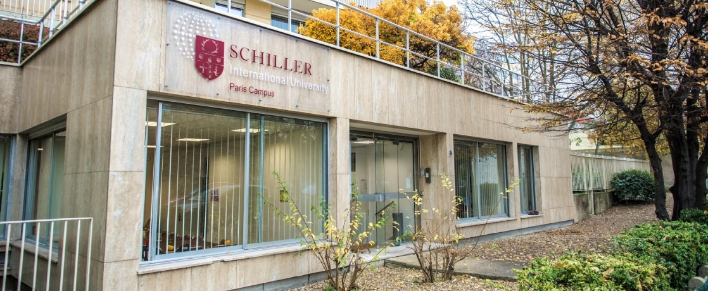

<!DOCTYPE html>
<html>
<head>
    
    <meta http-equiv="content-type" content="text/html; charset=UTF-8" />
    
        <script>
            L_NO_TOUCH = false;
            L_DISABLE_3D = false;
        </script>
    
    <style>html, body {width: 100%;height: 100%;margin: 0;padding: 0;}</style>
    <style>#map {position:absolute;top:0;bottom:0;right:0;left:0;}</style>
    <script src="https://cdn.jsdelivr.net/npm/leaflet@1.9.3/dist/leaflet.js"></script>
    <script src="https://code.jquery.com/jquery-1.12.4.min.js"></script>
    <script src="https://cdn.jsdelivr.net/npm/bootstrap@5.2.2/dist/js/bootstrap.bundle.min.js"></script>
    <script src="https://cdnjs.cloudflare.com/ajax/libs/Leaflet.awesome-markers/2.0.2/leaflet.awesome-markers.js"></script>
    <link rel="stylesheet" href="https://cdn.jsdelivr.net/npm/leaflet@1.9.3/dist/leaflet.css"/>
    <link rel="stylesheet" href="https://cdn.jsdelivr.net/npm/bootstrap@5.2.2/dist/css/bootstrap.min.css"/>
    <link rel="stylesheet" href="https://netdna.bootstrapcdn.com/bootstrap/3.0.0/css/bootstrap.min.css"/>
    <link rel="stylesheet" href="https://cdn.jsdelivr.net/npm/@fortawesome/fontawesome-free@6.2.0/css/all.min.css"/>
    <link rel="stylesheet" href="https://cdnjs.cloudflare.com/ajax/libs/Leaflet.awesome-markers/2.0.2/leaflet.awesome-markers.css"/>
    <link rel="stylesheet" href="https://cdn.jsdelivr.net/gh/python-visualization/folium/folium/templates/leaflet.awesome.rotate.min.css"/>
    
            <meta name="viewport" content="width=device-width,
                initial-scale=1.0, maximum-scale=1.0, user-scalable=no" />
            <style>
                #map_a2f89f4c6f712c1e5c9dfb79b27a142f {
                    position: relative;
                    width: 100.0%;
                    height: 100.0%;
                    left: 0.0%;
                    top: 0.0%;
                }
                .leaflet-container { font-size: 1rem; }
            </style>
        
    <script src="https://cdnjs.cloudflare.com/ajax/libs/leaflet-minimap/3.6.1/Control.MiniMap.js"></script>
    <link rel="stylesheet" href="https://cdnjs.cloudflare.com/ajax/libs/leaflet-minimap/3.6.1/Control.MiniMap.css"/>
    
            <style>
                #scroll_zoom_toggler_e21070cb1a4487ff2ad0389693f6006f {
                    position:absolute;
                    width:35px;
                    bottom:10px;
                    height:35px;
                    left:10px;
                    background-color:#fff;
                    text-align:center;
                    line-height:35px;
                    vertical-align: middle;
                    }
            </style>
        
    <script src="https://cdnjs.cloudflare.com/ajax/libs/leaflet.fullscreen/1.4.2/Control.FullScreen.min.js"></script>
    <link rel="stylesheet" href="https://cdnjs.cloudflare.com/ajax/libs/leaflet.fullscreen/1.4.2/Control.FullScreen.min.css"/>
    <script src="https://cdnjs.cloudflare.com/ajax/libs/leaflet.draw/1.0.2/leaflet.draw.js"></script>
    <link rel="stylesheet" href="https://cdnjs.cloudflare.com/ajax/libs/leaflet.draw/1.0.2/leaflet.draw.css"/>
    <script src="https://cdnjs.cloudflare.com/ajax/libs/leaflet-locatecontrol/0.66.2/L.Control.Locate.min.js"></script>
    <link rel="stylesheet" href="https://cdnjs.cloudflare.com/ajax/libs/leaflet-locatecontrol/0.66.2/L.Control.Locate.min.css"/>
    <script src="https://cdn.jsdelivr.net/gh/ljagis/leaflet-measure@2.1.7/dist/leaflet-measure.min.js"></script>
    <link rel="stylesheet" href="https://cdn.jsdelivr.net/gh/ljagis/leaflet-measure@2.1.7/dist/leaflet-measure.min.css"/>
</head>
<body>
    
    
            <div class="folium-map" id="map_a2f89f4c6f712c1e5c9dfb79b27a142f" ></div>
        
    
            
            </img>
        
</body>
<script>
    
    
            var map_a2f89f4c6f712c1e5c9dfb79b27a142f = L.map(
                "map_a2f89f4c6f712c1e5c9dfb79b27a142f",
                {
                    center: [48.856974619186985, 2.348662360226061],
                    crs: L.CRS.EPSG3857,
                    zoom: 12,
                    zoomControl: true,
                    preferCanvas: false,
                }
            );

            

        
    
            var tile_layer_40e1087094700717f8999fe86b6ea9f9 = L.tileLayer(
                "https://{s}.tile.openstreetmap.org/{z}/{x}/{y}.png",
                {"attribution": "Data by \u0026copy; \u003ca target=\"_blank\" href=\"http://openstreetmap.org\"\u003eOpenStreetMap\u003c/a\u003e, under \u003ca target=\"_blank\" href=\"http://www.openstreetmap.org/copyright\"\u003eODbL\u003c/a\u003e.", "detectRetina": false, "maxNativeZoom": 18, "maxZoom": 18, "minZoom": 0, "noWrap": false, "opacity": 1, "subdomains": "abc", "tms": false}
            ).addTo(map_a2f89f4c6f712c1e5c9dfb79b27a142f);
        
    
            var marker_5da09ee5cc94393cec641f58829522e4 = L.marker(
                [48.85891912156463, 2.294446167725308],
                {}
            ).addTo(map_a2f89f4c6f712c1e5c9dfb79b27a142f);
        
    
            var icon_d84dc8946efcdd2e0b6eff24cb193f06 = L.AwesomeMarkers.icon(
                {"extraClasses": "fa-rotate-0", "icon": "camera", "iconColor": "white", "markerColor": "blue", "prefix": "glyphicon"}
            );
            marker_5da09ee5cc94393cec641f58829522e4.setIcon(icon_d84dc8946efcdd2e0b6eff24cb193f06);
        
    
        var popup_1fce3d44f513a1557b92bea621ee696c = L.popup({"maxWidth": "100%"});

        
            
                var html_57c58d1e2c824d4bafbbf9fa7f85494e = $(`<div id="html_57c58d1e2c824d4bafbbf9fa7f85494e" style="width: 100.0%; height: 100.0%;"><h1> Eiffel Tower</h1><p>Gustave Eiffel's iconic, wrought-iron 1889 tower, with steps and elevators to observation decks. </p></div>`)[0];
                popup_1fce3d44f513a1557b92bea621ee696c.setContent(html_57c58d1e2c824d4bafbbf9fa7f85494e);
            
        

        marker_5da09ee5cc94393cec641f58829522e4.bindPopup(popup_1fce3d44f513a1557b92bea621ee696c)
        ;

        
    
    
            marker_5da09ee5cc94393cec641f58829522e4.bindTooltip(
                `<div>
                     Eiffel Tower
                 </div>`,
                {"sticky": true}
            );
        
    
            var marker_9dcc1746f43038e65fda68dc7c31de2f = L.marker(
                [48.84614046746433, 2.355615649235953],
                {}
            ).addTo(map_a2f89f4c6f712c1e5c9dfb79b27a142f);
        
    
            var icon_3e0bd53fc4b336dca38b547683b657e3 = L.AwesomeMarkers.icon(
                {"extraClasses": "fa-rotate-0", "icon": "camera", "iconColor": "white", "markerColor": "blue", "prefix": "glyphicon"}
            );
            marker_9dcc1746f43038e65fda68dc7c31de2f.setIcon(icon_3e0bd53fc4b336dca38b547683b657e3);
        
    
        var popup_e01420da445f63172025705d9482dc04 = L.popup({"maxWidth": "100%"});

        
            
                var html_1ff39f9c7e57fdd1515cd74a817b2d20 = $(`<div id="html_1ff39f9c7e57fdd1515cd74a817b2d20" style="width: 100.0%; height: 100.0%;"><h1> Grande Galerie de I'Evolution</h1><p>More than 7000 preserved animal specimens displayed in a vast metal & glass 19th-century hall. </p></div>`)[0];
                popup_e01420da445f63172025705d9482dc04.setContent(html_1ff39f9c7e57fdd1515cd74a817b2d20);
            
        

        marker_9dcc1746f43038e65fda68dc7c31de2f.bindPopup(popup_e01420da445f63172025705d9482dc04)
        ;

        
    
    
            marker_9dcc1746f43038e65fda68dc7c31de2f.bindTooltip(
                `<div>
                     Gallery of Evolution
                 </div>`,
                {"sticky": true}
            );
        
    
            var marker_49351e696f3ce6c851d86d076464f483 = L.marker(
                [48.86568002936441, 2.336732899736825],
                {}
            ).addTo(map_a2f89f4c6f712c1e5c9dfb79b27a142f);
        
    
            var icon_f577681d5e65fbea79c79e0d34dbac66 = L.AwesomeMarkers.icon(
                {"extraClasses": "fa-rotate-0", "icon": "camera", "iconColor": "white", "markerColor": "blue", "prefix": "glyphicon"}
            );
            marker_49351e696f3ce6c851d86d076464f483.setIcon(icon_f577681d5e65fbea79c79e0d34dbac66);
        
    
        var popup_1a778faab45dda59d0dd498cbd5273ba = L.popup({"maxWidth": "100%"});

        
            
                var html_47e8f6b002793965af517d4ace2046e6 = $(`<div id="html_47e8f6b002793965af517d4ace2046e6" style="width: 100.0%; height: 100.0%;"><h1>Louvre Pyramid </h1><p>Glass pyramid created by I. M. Pei, forming the entraceway into a lower-ground exhibition area. </p></div>`)[0];
                popup_1a778faab45dda59d0dd498cbd5273ba.setContent(html_47e8f6b002793965af517d4ace2046e6);
            
        

        marker_49351e696f3ce6c851d86d076464f483.bindPopup(popup_1a778faab45dda59d0dd498cbd5273ba)
        ;

        
    
    
            marker_49351e696f3ce6c851d86d076464f483.bindTooltip(
                `<div>
                     Louvre Pyramid
                 </div>`,
                {"sticky": true}
            );
        
    
            var marker_948d72ae9153296180f137524fe94b68 = L.marker(
                [48.860570276491856, 2.34410259284584],
                {}
            ).addTo(map_a2f89f4c6f712c1e5c9dfb79b27a142f);
        
    
            var icon_4619819e85d41daf1afe459bd8392556 = L.AwesomeMarkers.icon(
                {"extraClasses": "fa-rotate-0", "icon": "camera", "iconColor": "white", "markerColor": "blue", "prefix": "glyphicon"}
            );
            marker_948d72ae9153296180f137524fe94b68.setIcon(icon_4619819e85d41daf1afe459bd8392556);
        
    
        var popup_e0f99f865143ad585b8ac854e18f3994 = L.popup({"maxWidth": "100%"});

        
            
                var html_5328615c62907124e62d563ce7df0b01 = $(`<div id="html_5328615c62907124e62d563ce7df0b01" style="width: 100.0%; height: 100.0%;"><h1>Sainte-Chapelle </h1><p>Ornate, 13th-century, Gothic chapel with relics & notable stained-glass windows of bibical scenes. </p></div>`)[0];
                popup_e0f99f865143ad585b8ac854e18f3994.setContent(html_5328615c62907124e62d563ce7df0b01);
            
        

        marker_948d72ae9153296180f137524fe94b68.bindPopup(popup_e0f99f865143ad585b8ac854e18f3994)
        ;

        
    
    
            marker_948d72ae9153296180f137524fe94b68.bindTooltip(
                `<div>
                     Sainte-Chapelle
                 </div>`,
                {"sticky": true}
            );
        
    
            var marker_71302c12f57d39c39b54dff8123cde76 = L.marker(
                [48.87276576343035, 2.317151756161392],
                {}
            ).addTo(map_a2f89f4c6f712c1e5c9dfb79b27a142f);
        
    
            var icon_214e5549857ea488e111c199378a1a66 = L.AwesomeMarkers.icon(
                {"extraClasses": "fa-rotate-0", "icon": "camera", "iconColor": "white", "markerColor": "blue", "prefix": "glyphicon"}
            );
            marker_71302c12f57d39c39b54dff8123cde76.setIcon(icon_214e5549857ea488e111c199378a1a66);
        
    
        var popup_b9c0d600ffe3c69e422e34053998515e = L.popup({"maxWidth": "100%"});

        
            
                var html_380a3a549af00539b45fd551f395e8bf = $(`<div id="html_380a3a549af00539b45fd551f395e8bf" style="width: 100.0%; height: 100.0%;"><h1>Jardin des Champs-Elysees </h1><p>Iconic formal gardens landscaped by Andre Le Notre in 1667, with theaters, palaces & statues. </p></div>`)[0];
                popup_b9c0d600ffe3c69e422e34053998515e.setContent(html_380a3a549af00539b45fd551f395e8bf);
            
        

        marker_71302c12f57d39c39b54dff8123cde76.bindPopup(popup_b9c0d600ffe3c69e422e34053998515e)
        ;

        
    
    
            marker_71302c12f57d39c39b54dff8123cde76.bindTooltip(
                `<div>
                     Jardin des Champs-Elysees
                 </div>`,
                {"sticky": true}
            );
        
    
            var marker_1fb94b7799634a67a3f9d7f7bd15cfac = L.marker(
                [48.857365799520664, 2.3374076331608125],
                {}
            ).addTo(map_a2f89f4c6f712c1e5c9dfb79b27a142f);
        
    
            var icon_6d1d6d6f4d77cef581d52eab636bc99a = L.AwesomeMarkers.icon(
                {"extraClasses": "fa-rotate-0", "icon": "cutlery", "iconColor": "black", "markerColor": "orange", "prefix": "glyphicon"}
            );
            marker_1fb94b7799634a67a3f9d7f7bd15cfac.setIcon(icon_6d1d6d6f4d77cef581d52eab636bc99a);
        
    
        var popup_84fb898b37e5fb0d6a58135ecef0171f = L.popup({"maxWidth": "100%"});

        
            
                var html_82703fa700b1f4a59880b49384ff2851 = $(`<div id="html_82703fa700b1f4a59880b49384ff2851" style="width: 100.0%; height: 100.0%;"><h1>Lobineau </h1><p>Intimate bistro with sidewalk seating offering traditional dishes spotlighting seafood. </p></div>`)[0];
                popup_84fb898b37e5fb0d6a58135ecef0171f.setContent(html_82703fa700b1f4a59880b49384ff2851);
            
        

        marker_1fb94b7799634a67a3f9d7f7bd15cfac.bindPopup(popup_84fb898b37e5fb0d6a58135ecef0171f)
        ;

        
    
    
            marker_1fb94b7799634a67a3f9d7f7bd15cfac.bindTooltip(
                `<div>
                     Lobineau
                 </div>`,
                {"sticky": true}
            );
        
    
            var marker_6cb724f1e60f82d07456a93cce18fb44 = L.marker(
                [48.831734473779626, 2.371362160167213],
                {}
            ).addTo(map_a2f89f4c6f712c1e5c9dfb79b27a142f);
        
    
            var icon_9694a8ad82093042bbb10f6b9400aa0c = L.AwesomeMarkers.icon(
                {"extraClasses": "fa-rotate-0", "icon": "cutlery", "iconColor": "black", "markerColor": "orange", "prefix": "glyphicon"}
            );
            marker_6cb724f1e60f82d07456a93cce18fb44.setIcon(icon_9694a8ad82093042bbb10f6b9400aa0c);
        
    
        var popup_1042b2909fd153fe620eece98adbc17a = L.popup({"maxWidth": "100%"});

        
            
                var html_01e84a04a9425e2cf076b3e84508881d = $(`<div id="html_01e84a04a9425e2cf076b3e84508881d" style="width: 100.0%; height: 100.0%;"><h1>Arlocchino </h1><p>A real delight with homemade sauces and desserts. </p></div>`)[0];
                popup_1042b2909fd153fe620eece98adbc17a.setContent(html_01e84a04a9425e2cf076b3e84508881d);
            
        

        marker_6cb724f1e60f82d07456a93cce18fb44.bindPopup(popup_1042b2909fd153fe620eece98adbc17a)
        ;

        
    
    
            marker_6cb724f1e60f82d07456a93cce18fb44.bindTooltip(
                `<div>
                     Arlocchino
                 </div>`,
                {"sticky": true}
            );
        
    
            var marker_51f28356da4666d39917652e8b18ccfb = L.marker(
                [48.878142843777034, 2.3532004791542893],
                {}
            ).addTo(map_a2f89f4c6f712c1e5c9dfb79b27a142f);
        
    
            var icon_0f8f312cf96addebf3f2267e6fb97cd0 = L.AwesomeMarkers.icon(
                {"extraClasses": "fa-rotate-0", "icon": "cutlery", "iconColor": "black", "markerColor": "orange", "prefix": "glyphicon"}
            );
            marker_51f28356da4666d39917652e8b18ccfb.setIcon(icon_0f8f312cf96addebf3f2267e6fb97cd0);
        
    
        var popup_3a910a350259e0ebbd126402547ad617 = L.popup({"maxWidth": "100%"});

        
            
                var html_2be4da0af6dbad02a1faac6b1249fa25 = $(`<div id="html_2be4da0af6dbad02a1faac6b1249fa25" style="width: 100.0%; height: 100.0%;"><h1>Old Shalimar </h1><p>Meat, fish & vegetarian curries fixed up in an unpretentious restaurant with a sidewalk terrace. </p></div>`)[0];
                popup_3a910a350259e0ebbd126402547ad617.setContent(html_2be4da0af6dbad02a1faac6b1249fa25);
            
        

        marker_51f28356da4666d39917652e8b18ccfb.bindPopup(popup_3a910a350259e0ebbd126402547ad617)
        ;

        
    
    
            marker_51f28356da4666d39917652e8b18ccfb.bindTooltip(
                `<div>
                     Old Shalimar
                 </div>`,
                {"sticky": true}
            );
        
    
            var marker_c56bd798a36dae0b15da8ac699c0512b = L.marker(
                [48.84395354197944, 2.344029291923241],
                {}
            ).addTo(map_a2f89f4c6f712c1e5c9dfb79b27a142f);
        
    
            var icon_b67317c62cf9449deaf84288a6b14b91 = L.AwesomeMarkers.icon(
                {"extraClasses": "fa-rotate-0", "icon": "cutlery", "iconColor": "black", "markerColor": "orange", "prefix": "glyphicon"}
            );
            marker_c56bd798a36dae0b15da8ac699c0512b.setIcon(icon_b67317c62cf9449deaf84288a6b14b91);
        
    
        var popup_06499a9ed6cfa54f241c86cb45b63a79 = L.popup({"maxWidth": "100%"});

        
            
                var html_58ab714b735dd75dbf88bd1ed7014f1c = $(`<div id="html_58ab714b735dd75dbf88bd1ed7014f1c" style="width: 100.0%; height: 100.0%;"><h1>Bistronomique Florina </h1><p>Cuisine elaborated with fresh products, homemade and with a gastronomic touch. </p></div>`)[0];
                popup_06499a9ed6cfa54f241c86cb45b63a79.setContent(html_58ab714b735dd75dbf88bd1ed7014f1c);
            
        

        marker_c56bd798a36dae0b15da8ac699c0512b.bindPopup(popup_06499a9ed6cfa54f241c86cb45b63a79)
        ;

        
    
    
            marker_c56bd798a36dae0b15da8ac699c0512b.bindTooltip(
                `<div>
                     Bistronomique Florina
                 </div>`,
                {"sticky": true}
            );
        
    
            var marker_5542ac33771323382831d82bf38ec22a = L.marker(
                [48.85904169210472, 2.3615605601672134],
                {}
            ).addTo(map_a2f89f4c6f712c1e5c9dfb79b27a142f);
        
    
            var icon_0f993cb42c606bf6b44fa92a5cc8f18f = L.AwesomeMarkers.icon(
                {"extraClasses": "fa-rotate-0", "icon": "cutlery", "iconColor": "black", "markerColor": "orange", "prefix": "glyphicon"}
            );
            marker_5542ac33771323382831d82bf38ec22a.setIcon(icon_0f993cb42c606bf6b44fa92a5cc8f18f);
        
    
        var popup_22d7c8b75d7385465b3bbdbbfa8c0275 = L.popup({"maxWidth": "100%"});

        
            
                var html_a53b7bfd71bf72fb0ccefd841ce18de7 = $(`<div id="html_a53b7bfd71bf72fb0ccefd841ce18de7" style="width: 100.0%; height: 100.0%;"><h1>Le Chanard </h1><p>Intimate venue with a small terrace & cozy interiors, offering classic french food. </p></div>`)[0];
                popup_22d7c8b75d7385465b3bbdbbfa8c0275.setContent(html_a53b7bfd71bf72fb0ccefd841ce18de7);
            
        

        marker_5542ac33771323382831d82bf38ec22a.bindPopup(popup_22d7c8b75d7385465b3bbdbbfa8c0275)
        ;

        
    
    
            marker_5542ac33771323382831d82bf38ec22a.bindTooltip(
                `<div>
                     Le Chanard
                 </div>`,
                {"sticky": true}
            );
        
    
            var marker_ad738bb9568bf1138dc09af9a6dda759 = L.marker(
                [48.83342661267628, 2.3133893273845216],
                {}
            ).addTo(map_a2f89f4c6f712c1e5c9dfb79b27a142f);
        
    
            var icon_c7cd99b7db6fcc2777c35c4d21299937 = L.AwesomeMarkers.icon(
                {"extraClasses": "fa-rotate-0", "icon": "header", "iconColor": "white", "markerColor": "red", "prefix": "glyphicon"}
            );
            marker_ad738bb9568bf1138dc09af9a6dda759.setIcon(icon_c7cd99b7db6fcc2777c35c4d21299937);
        
    
        var popup_5e499734cbcadfa98f51e245897b7216 = L.popup({"maxWidth": "100%"});

        
            
                var html_090715144eab025b0a89006a5df53ef2 = $(`<div id="html_090715144eab025b0a89006a5df53ef2" style="width: 100.0%; height: 100.0%;"><h1>Saint-Joseph Hospital </h1><p> </p></div>`)[0];
                popup_5e499734cbcadfa98f51e245897b7216.setContent(html_090715144eab025b0a89006a5df53ef2);
            
        

        marker_ad738bb9568bf1138dc09af9a6dda759.bindPopup(popup_5e499734cbcadfa98f51e245897b7216)
        ;

        
    
    
            marker_ad738bb9568bf1138dc09af9a6dda759.bindTooltip(
                `<div>
                     Saint-Joseph Hospital
                 </div>`,
                {"sticky": true}
            );
        
    
            var marker_e981c3f8f4a92cba2202ba574f2029e8 = L.marker(
                [48.844273070205595, 2.3607678666072314],
                {}
            ).addTo(map_a2f89f4c6f712c1e5c9dfb79b27a142f);
        
    
            var icon_9355ad6166a28a68d9e1613de422c836 = L.AwesomeMarkers.icon(
                {"extraClasses": "fa-rotate-0", "icon": "header", "iconColor": "white", "markerColor": "red", "prefix": "glyphicon"}
            );
            marker_e981c3f8f4a92cba2202ba574f2029e8.setIcon(icon_9355ad6166a28a68d9e1613de422c836);
        
    
        var popup_67f77c32a5a3dc87778627cb3ae3323a = L.popup({"maxWidth": "100%"});

        
            
                var html_b8fb8d88a39f5327746b5fa1bf65e73d = $(`<div id="html_b8fb8d88a39f5327746b5fa1bf65e73d" style="width: 100.0%; height: 100.0%;"><h1>Salpetriere Hospital </h1><p> </p></div>`)[0];
                popup_67f77c32a5a3dc87778627cb3ae3323a.setContent(html_b8fb8d88a39f5327746b5fa1bf65e73d);
            
        

        marker_e981c3f8f4a92cba2202ba574f2029e8.bindPopup(popup_67f77c32a5a3dc87778627cb3ae3323a)
        ;

        
    
    
            marker_e981c3f8f4a92cba2202ba574f2029e8.bindTooltip(
                `<div>
                     Salpetriere Hospital
                 </div>`,
                {"sticky": true}
            );
        
    
            var marker_e46b59607a19c99b03241cde911539de = L.marker(
                [48.884136203896404, 2.377419020612388],
                {}
            ).addTo(map_a2f89f4c6f712c1e5c9dfb79b27a142f);
        
    
            var icon_c688944a1fa868d7ed545be95a840e31 = L.AwesomeMarkers.icon(
                {"extraClasses": "fa-rotate-0", "icon": "header", "iconColor": "white", "markerColor": "red", "prefix": "glyphicon"}
            );
            marker_e46b59607a19c99b03241cde911539de.setIcon(icon_c688944a1fa868d7ed545be95a840e31);
        
    
        var popup_92830d57e08ca65e5e4adc83d353e502 = L.popup({"maxWidth": "100%"});

        
            
                var html_179c6f8ad26c92cad0cb316fc4357f90 = $(`<div id="html_179c6f8ad26c92cad0cb316fc4357f90" style="width: 100.0%; height: 100.0%;"><h1>Foundation Adolphe de Rothschild Hospital </h1><p> </p></div>`)[0];
                popup_92830d57e08ca65e5e4adc83d353e502.setContent(html_179c6f8ad26c92cad0cb316fc4357f90);
            
        

        marker_e46b59607a19c99b03241cde911539de.bindPopup(popup_92830d57e08ca65e5e4adc83d353e502)
        ;

        
    
    
            marker_e46b59607a19c99b03241cde911539de.bindTooltip(
                `<div>
                     Foundation Adolphe de Rothschild Hospital
                 </div>`,
                {"sticky": true}
            );
        
    
            var marker_28e41adce20ca47d585153d06cf29b7b = L.marker(
                [48.88774828942138, 2.3049779207863685],
                {}
            ).addTo(map_a2f89f4c6f712c1e5c9dfb79b27a142f);
        
    
            var icon_f8ae386cdf57cf4bd309d70fdff5d3fa = L.AwesomeMarkers.icon(
                {"extraClasses": "fa-rotate-0", "icon": "header", "iconColor": "white", "markerColor": "red", "prefix": "glyphicon"}
            );
            marker_28e41adce20ca47d585153d06cf29b7b.setIcon(icon_f8ae386cdf57cf4bd309d70fdff5d3fa);
        
    
        var popup_b34ea84497afa4964d8f2cb3f158653d = L.popup({"maxWidth": "100%"});

        
            
                var html_dd16c2ad99e5835021b9a012475662b1 = $(`<div id="html_dd16c2ad99e5835021b9a012475662b1" style="width: 100.0%; height: 100.0%;"><h1>Clinique International Hospital </h1><p> </p></div>`)[0];
                popup_b34ea84497afa4964d8f2cb3f158653d.setContent(html_dd16c2ad99e5835021b9a012475662b1);
            
        

        marker_28e41adce20ca47d585153d06cf29b7b.bindPopup(popup_b34ea84497afa4964d8f2cb3f158653d)
        ;

        
    
    
            marker_28e41adce20ca47d585153d06cf29b7b.bindTooltip(
                `<div>
                     Clinique International Hospital
                 </div>`,
                {"sticky": true}
            );
        
    
            var marker_e26b66450535732fe85ded98b6b1c4eb = L.marker(
                [48.878261220977414, 2.3699415601672134],
                {}
            ).addTo(map_a2f89f4c6f712c1e5c9dfb79b27a142f);
        
    
            var icon_7b0e3b26000d1f930221e48b717081f7 = L.AwesomeMarkers.icon(
                {"extraClasses": "fa-rotate-0", "icon": "header", "iconColor": "white", "markerColor": "red", "prefix": "glyphicon"}
            );
            marker_e26b66450535732fe85ded98b6b1c4eb.setIcon(icon_7b0e3b26000d1f930221e48b717081f7);
        
    
        var popup_82ae11c5cd50550055534282cc096c20 = L.popup({"maxWidth": "100%"});

        
            
                var html_6c4997370bf2ac42a3174e9cb88c6df5 = $(`<div id="html_6c4997370bf2ac42a3174e9cb88c6df5" style="width: 100.0%; height: 100.0%;"><h1>Saint-Louis Hospital </h1><p> </p></div>`)[0];
                popup_82ae11c5cd50550055534282cc096c20.setContent(html_6c4997370bf2ac42a3174e9cb88c6df5);
            
        

        marker_e26b66450535732fe85ded98b6b1c4eb.bindPopup(popup_82ae11c5cd50550055534282cc096c20)
        ;

        
    
    
            marker_e26b66450535732fe85ded98b6b1c4eb.bindTooltip(
                `<div>
                     Saint-Louis Hospital
                 </div>`,
                {"sticky": true}
            );
        
    
            var marker_6d76600b8770ae3a3a4e6eb64f5b2611 = L.marker(
                [48.84368177605798, 2.3238743284111854],
                {}
            ).addTo(map_a2f89f4c6f712c1e5c9dfb79b27a142f);
        
    
            var icon_4f597d2ff82cad4d79dd25b3865febce = L.AwesomeMarkers.icon(
                {"extraClasses": "fa-rotate-0", "icon": "euro", "iconColor": "black", "markerColor": "blue", "prefix": "glyphicon"}
            );
            marker_6d76600b8770ae3a3a4e6eb64f5b2611.setIcon(icon_4f597d2ff82cad4d79dd25b3865febce);
        
    
        var popup_126fff0061f2b9537c6f33ac76bf5b20 = L.popup({"maxWidth": "100%"});

        
            
                var html_38dc80294c6aff352e92331c2dc3ae36 = $(`<div id="html_38dc80294c6aff352e92331c2dc3ae36" style="width: 100.0%; height: 100.0%;"><h1>Societe Generale ATM </h1><p> </p></div>`)[0];
                popup_126fff0061f2b9537c6f33ac76bf5b20.setContent(html_38dc80294c6aff352e92331c2dc3ae36);
            
        

        marker_6d76600b8770ae3a3a4e6eb64f5b2611.bindPopup(popup_126fff0061f2b9537c6f33ac76bf5b20)
        ;

        
    
    
            marker_6d76600b8770ae3a3a4e6eb64f5b2611.bindTooltip(
                `<div>
                     Societe Generale ATM
                 </div>`,
                {"sticky": true}
            );
        
    
            var marker_e1f13150988aa59aa9f77e3424c1b294 = L.marker(
                [48.84099365522694, 2.352689475865048],
                {}
            ).addTo(map_a2f89f4c6f712c1e5c9dfb79b27a142f);
        
    
            var icon_22ab735268bdffbbf9097c0b6b70e78c = L.AwesomeMarkers.icon(
                {"extraClasses": "fa-rotate-0", "icon": "euro", "iconColor": "black", "markerColor": "blue", "prefix": "glyphicon"}
            );
            marker_e1f13150988aa59aa9f77e3424c1b294.setIcon(icon_22ab735268bdffbbf9097c0b6b70e78c);
        
    
        var popup_fcf6b4beade4833f920747892a517ab9 = L.popup({"maxWidth": "100%"});

        
            
                var html_34db4f44e5d5da7ec667b4e8e71af763 = $(`<div id="html_34db4f44e5d5da7ec667b4e8e71af763" style="width: 100.0%; height: 100.0%;"><h1>ATM </h1><p> </p></div>`)[0];
                popup_fcf6b4beade4833f920747892a517ab9.setContent(html_34db4f44e5d5da7ec667b4e8e71af763);
            
        

        marker_e1f13150988aa59aa9f77e3424c1b294.bindPopup(popup_fcf6b4beade4833f920747892a517ab9)
        ;

        
    
    
            marker_e1f13150988aa59aa9f77e3424c1b294.bindTooltip(
                `<div>
                     ATM
                 </div>`,
                {"sticky": true}
            );
        
    
            var marker_3d79b12dae4f18afaa586c76c88bf3fa = L.marker(
                [48.89519426631659, 2.3187005238139733],
                {}
            ).addTo(map_a2f89f4c6f712c1e5c9dfb79b27a142f);
        
    
            var icon_9828d1503f96d4fb1e3b680c34062aaa = L.AwesomeMarkers.icon(
                {"extraClasses": "fa-rotate-0", "icon": "euro", "iconColor": "black", "markerColor": "blue", "prefix": "glyphicon"}
            );
            marker_3d79b12dae4f18afaa586c76c88bf3fa.setIcon(icon_9828d1503f96d4fb1e3b680c34062aaa);
        
    
        var popup_e264c1f2de8d91ba2ad5c9a5de843354 = L.popup({"maxWidth": "100%"});

        
            
                var html_ab7678d7a43f774e8f91030f2347a998 = $(`<div id="html_ab7678d7a43f774e8f91030f2347a998" style="width: 100.0%; height: 100.0%;"><h1>GAB BNP Paribas ATM </h1><p> </p></div>`)[0];
                popup_e264c1f2de8d91ba2ad5c9a5de843354.setContent(html_ab7678d7a43f774e8f91030f2347a998);
            
        

        marker_3d79b12dae4f18afaa586c76c88bf3fa.bindPopup(popup_e264c1f2de8d91ba2ad5c9a5de843354)
        ;

        
    
    
            marker_3d79b12dae4f18afaa586c76c88bf3fa.bindTooltip(
                `<div>
                     GAB BNP Paribas ATM
                 </div>`,
                {"sticky": true}
            );
        
    
            var marker_84c6434ba056147de26511ac61cac5b1 = L.marker(
                [48.87318234923149, 2.291749687055564],
                {}
            ).addTo(map_a2f89f4c6f712c1e5c9dfb79b27a142f);
        
    
            var icon_9aa776f6badba583f9cec1d5654524e5 = L.AwesomeMarkers.icon(
                {"extraClasses": "fa-rotate-0", "icon": "euro", "iconColor": "black", "markerColor": "blue", "prefix": "glyphicon"}
            );
            marker_84c6434ba056147de26511ac61cac5b1.setIcon(icon_9aa776f6badba583f9cec1d5654524e5);
        
    
        var popup_a09a347d8f1c7a0c04b2ab209e44112b = L.popup({"maxWidth": "100%"});

        
            
                var html_a109e16d8df37249f972a156907c3059 = $(`<div id="html_a109e16d8df37249f972a156907c3059" style="width: 100.0%; height: 100.0%;"><h1>ATM </h1><p> </p></div>`)[0];
                popup_a09a347d8f1c7a0c04b2ab209e44112b.setContent(html_a109e16d8df37249f972a156907c3059);
            
        

        marker_84c6434ba056147de26511ac61cac5b1.bindPopup(popup_a09a347d8f1c7a0c04b2ab209e44112b)
        ;

        
    
    
            marker_84c6434ba056147de26511ac61cac5b1.bindTooltip(
                `<div>
                     ATM
                 </div>`,
                {"sticky": true}
            );
        
    
            var marker_b29a2a9e8cd4d01ff49665d7813641d9 = L.marker(
                [48.86335851262067, 2.3544060886271723],
                {}
            ).addTo(map_a2f89f4c6f712c1e5c9dfb79b27a142f);
        
    
            var icon_2834c0208b10b50001a65b2657f1cae8 = L.AwesomeMarkers.icon(
                {"extraClasses": "fa-rotate-0", "icon": "plus", "iconColor": "red", "markerColor": "green", "prefix": "glyphicon"}
            );
            marker_b29a2a9e8cd4d01ff49665d7813641d9.setIcon(icon_2834c0208b10b50001a65b2657f1cae8);
        
    
        var popup_4e8d649ba4ed7f0357d6dcd0779abb7a = L.popup({"maxWidth": "100%"});

        
            
                var html_ff1b5bcc4d1630ed7d3fa58d5a02ff77 = $(`<div id="html_ff1b5bcc4d1630ed7d3fa58d5a02ff77" style="width: 100.0%; height: 100.0%;"><h1>Archives Pharmacy </h1><p> </p></div>`)[0];
                popup_4e8d649ba4ed7f0357d6dcd0779abb7a.setContent(html_ff1b5bcc4d1630ed7d3fa58d5a02ff77);
            
        

        marker_b29a2a9e8cd4d01ff49665d7813641d9.bindPopup(popup_4e8d649ba4ed7f0357d6dcd0779abb7a)
        ;

        
    
    
            marker_b29a2a9e8cd4d01ff49665d7813641d9.bindTooltip(
                `<div>
                     Archives Pharmacy
                 </div>`,
                {"sticky": true}
            );
        
    
            var marker_c91e96d36a9f5109e28c22a3e29df4f5 = L.marker(
                [48.89564568282913, 2.343076437943481],
                {}
            ).addTo(map_a2f89f4c6f712c1e5c9dfb79b27a142f);
        
    
            var icon_da6642aef8f970996395832238d9a43c = L.AwesomeMarkers.icon(
                {"extraClasses": "fa-rotate-0", "icon": "plus", "iconColor": "red", "markerColor": "green", "prefix": "glyphicon"}
            );
            marker_c91e96d36a9f5109e28c22a3e29df4f5.setIcon(icon_da6642aef8f970996395832238d9a43c);
        
    
        var popup_f0f135dc0a7e27db1c69ea152f8af674 = L.popup({"maxWidth": "100%"});

        
            
                var html_57b30b0f870b6862347e63373b5f82df = $(`<div id="html_57b30b0f870b6862347e63373b5f82df" style="width: 100.0%; height: 100.0%;"><h1>Custin well & well Pharmacy </h1><p> </p></div>`)[0];
                popup_f0f135dc0a7e27db1c69ea152f8af674.setContent(html_57b30b0f870b6862347e63373b5f82df);
            
        

        marker_c91e96d36a9f5109e28c22a3e29df4f5.bindPopup(popup_f0f135dc0a7e27db1c69ea152f8af674)
        ;

        
    
    
            marker_c91e96d36a9f5109e28c22a3e29df4f5.bindTooltip(
                `<div>
                     Custin well & well Pharmacy
                 </div>`,
                {"sticky": true}
            );
        
    
            var marker_75f2e298340b54d960c1773ed49ac86e = L.marker(
                [48.88255269952838, 2.3537194431311907],
                {}
            ).addTo(map_a2f89f4c6f712c1e5c9dfb79b27a142f);
        
    
            var icon_7595263387810e6a0054baa1e7810e69 = L.AwesomeMarkers.icon(
                {"extraClasses": "fa-rotate-0", "icon": "plus", "iconColor": "red", "markerColor": "green", "prefix": "glyphicon"}
            );
            marker_75f2e298340b54d960c1773ed49ac86e.setIcon(icon_7595263387810e6a0054baa1e7810e69);
        
    
        var popup_075f92503ad947bb4c8d9e07df8d354b = L.popup({"maxWidth": "100%"});

        
            
                var html_07236bb0098ed66e309438cad7e9b8aa = $(`<div id="html_07236bb0098ed66e309438cad7e9b8aa" style="width: 100.0%; height: 100.0%;"><h1>Central North Pharmacy </h1><p> </p></div>`)[0];
                popup_075f92503ad947bb4c8d9e07df8d354b.setContent(html_07236bb0098ed66e309438cad7e9b8aa);
            
        

        marker_75f2e298340b54d960c1773ed49ac86e.bindPopup(popup_075f92503ad947bb4c8d9e07df8d354b)
        ;

        
    
    
            marker_75f2e298340b54d960c1773ed49ac86e.bindTooltip(
                `<div>
                     Central North Pharmacy
                 </div>`,
                {"sticky": true}
            );
        
    
            var marker_012a71317d241272287c447f68bdf9ca = L.marker(
                [48.86990794520091, 2.2823083108747584],
                {}
            ).addTo(map_a2f89f4c6f712c1e5c9dfb79b27a142f);
        
    
            var icon_e631ef31fd3b62ec52abc42701817337 = L.AwesomeMarkers.icon(
                {"extraClasses": "fa-rotate-0", "icon": "plus", "iconColor": "red", "markerColor": "green", "prefix": "glyphicon"}
            );
            marker_012a71317d241272287c447f68bdf9ca.setIcon(icon_e631ef31fd3b62ec52abc42701817337);
        
    
        var popup_91206facbee0070f7886cc858822ae68 = L.popup({"maxWidth": "100%"});

        
            
                var html_2115c786f24daf4ad362a8acd8ed77b9 = $(`<div id="html_2115c786f24daf4ad362a8acd8ed77b9" style="width: 100.0%; height: 100.0%;"><h1>Lafayette Pharmacy </h1><p> </p></div>`)[0];
                popup_91206facbee0070f7886cc858822ae68.setContent(html_2115c786f24daf4ad362a8acd8ed77b9);
            
        

        marker_012a71317d241272287c447f68bdf9ca.bindPopup(popup_91206facbee0070f7886cc858822ae68)
        ;

        
    
    
            marker_012a71317d241272287c447f68bdf9ca.bindTooltip(
                `<div>
                     Lafayette Pharmacy
                 </div>`,
                {"sticky": true}
            );
        
    
            var marker_2b35d3b2cc6c61c4c98ed69bf6afc06a = L.marker(
                [48.85089778468734, 2.4042063237308953],
                {}
            ).addTo(map_a2f89f4c6f712c1e5c9dfb79b27a142f);
        
    
            var icon_384f4af2d2e8cb4e8abf04a0a1baedfd = L.AwesomeMarkers.icon(
                {"extraClasses": "fa-rotate-0", "icon": "plus", "iconColor": "red", "markerColor": "green", "prefix": "glyphicon"}
            );
            marker_2b35d3b2cc6c61c4c98ed69bf6afc06a.setIcon(icon_384f4af2d2e8cb4e8abf04a0a1baedfd);
        
    
        var popup_0712e051207cb564a558581700b8a037 = L.popup({"maxWidth": "100%"});

        
            
                var html_e2958a50bd63e9fd3ca04fb55b551ab2 = $(`<div id="html_e2958a50bd63e9fd3ca04fb55b551ab2" style="width: 100.0%; height: 100.0%;"><h1>Pharmacy Marsoulan </h1><p> </p></div>`)[0];
                popup_0712e051207cb564a558581700b8a037.setContent(html_e2958a50bd63e9fd3ca04fb55b551ab2);
            
        

        marker_2b35d3b2cc6c61c4c98ed69bf6afc06a.bindPopup(popup_0712e051207cb564a558581700b8a037)
        ;

        
    
    
            marker_2b35d3b2cc6c61c4c98ed69bf6afc06a.bindTooltip(
                `<div>
                     Pharmacy Marsoulan
                 </div>`,
                {"sticky": true}
            );
        
    
            var marker_2592e1156944de0bfb024837bbb1f8bd = L.marker(
                [48.86665251235251, 2.3091928464272597],
                {}
            ).addTo(map_a2f89f4c6f712c1e5c9dfb79b27a142f);
        
    
            var icon_b0dc466a427eb326415557c701ff9a75 = L.AwesomeMarkers.icon(
                {"extraClasses": "fa-rotate-0", "icon": "pencil", "iconColor": "red", "markerColor": "blue", "prefix": "glyphicon"}
            );
            marker_2592e1156944de0bfb024837bbb1f8bd.setIcon(icon_b0dc466a427eb326415557c701ff9a75);
        
    
        var popup_ebbf3f3ebf375200bb88e314173318d2 = L.popup({"maxWidth": "100%"});

        
            
                var html_17dfbd201d98ff9f3f9492b3b54f55e0 = $(`<div id="html_17dfbd201d98ff9f3f9492b3b54f55e0" style="width: 100.0%; height: 100.0%;"><h1>The American University of Paris </h1><p>Private University </p></div>`)[0];
                popup_ebbf3f3ebf375200bb88e314173318d2.setContent(html_17dfbd201d98ff9f3f9492b3b54f55e0);
            
        

        marker_2592e1156944de0bfb024837bbb1f8bd.bindPopup(popup_ebbf3f3ebf375200bb88e314173318d2)
        ;

        
    
    
            marker_2592e1156944de0bfb024837bbb1f8bd.bindTooltip(
                `<div>
                     The American University of Paris
                 </div>`,
                {"sticky": true}
            );
        
    
            var marker_7725b09afec6cd3bad2ba881d3e91c97 = L.marker(
                [48.85464459481213, 2.3446312919232413],
                {}
            ).addTo(map_a2f89f4c6f712c1e5c9dfb79b27a142f);
        
    
            var icon_36271abbcd81bd90122c31b98182ff29 = L.AwesomeMarkers.icon(
                {"extraClasses": "fa-rotate-0", "icon": "pencil", "iconColor": "red", "markerColor": "blue", "prefix": "glyphicon"}
            );
            marker_7725b09afec6cd3bad2ba881d3e91c97.setIcon(icon_36271abbcd81bd90122c31b98182ff29);
        
    
        var popup_8b7de7e3937989b8f88710747149a1e1 = L.popup({"maxWidth": "100%"});

        
            
                var html_66ad891bcf8b040bc7482fa7c27271b8 = $(`<div id="html_66ad891bcf8b040bc7482fa7c27271b8" style="width: 100.0%; height: 100.0%;"><h1>College de France </h1><p>Unique education & research institution with diverse lectures from a changing roster of experts. </p></div>`)[0];
                popup_8b7de7e3937989b8f88710747149a1e1.setContent(html_66ad891bcf8b040bc7482fa7c27271b8);
            
        

        marker_7725b09afec6cd3bad2ba881d3e91c97.bindPopup(popup_8b7de7e3937989b8f88710747149a1e1)
        ;

        
    
    
            marker_7725b09afec6cd3bad2ba881d3e91c97.bindTooltip(
                `<div>
                     College de France
                 </div>`,
                {"sticky": true}
            );
        
    
            var marker_5eda82a653852781478718807f30e270 = L.marker(
                [48.87952269854874, 2.297293714671232],
                {}
            ).addTo(map_a2f89f4c6f712c1e5c9dfb79b27a142f);
        
    
            var icon_6dd91509abb0860ec5fd11c05ab2f5de = L.AwesomeMarkers.icon(
                {"extraClasses": "fa-rotate-0", "icon": "pencil", "iconColor": "red", "markerColor": "blue", "prefix": "glyphicon"}
            );
            marker_5eda82a653852781478718807f30e270.setIcon(icon_6dd91509abb0860ec5fd11c05ab2f5de);
        
    
        var popup_0ff900d96a183682d9cdd279cbea61a8 = L.popup({"maxWidth": "100%"});

        
            
                var html_c4644aba7e333f9e6033eddd5716bfdc = $(`<div id="html_c4644aba7e333f9e6033eddd5716bfdc" style="width: 100.0%; height: 100.0%;"><h1>Schiller International University </h1><p>Private University that offers Bachelor and Master degrees, with its main campus and administrative headquaters in Florida. Campus resources include a computer lab, a student lounge and many facilities. Students may also have access to the American Library of Paris. </p></div>`)[0];
                popup_0ff900d96a183682d9cdd279cbea61a8.setContent(html_c4644aba7e333f9e6033eddd5716bfdc);
            
        

        marker_5eda82a653852781478718807f30e270.bindPopup(popup_0ff900d96a183682d9cdd279cbea61a8)
        ;

        
    
    
            marker_5eda82a653852781478718807f30e270.bindTooltip(
                `<div>
                     Schiller International University
                 </div>`,
                {"sticky": true}
            );
        
    
            var marker_159f0d9f53fce5ece456237ffc9d305a = L.marker(
                [48.848003056881204, 2.3905016464272597],
                {}
            ).addTo(map_a2f89f4c6f712c1e5c9dfb79b27a142f);
        
    
            var icon_5d2fd4041144b7eb143740772f8516ea = L.AwesomeMarkers.icon(
                {"extraClasses": "fa-rotate-0", "icon": "pencil", "iconColor": "red", "markerColor": "blue", "prefix": "glyphicon"}
            );
            marker_159f0d9f53fce5ece456237ffc9d305a.setIcon(icon_5d2fd4041144b7eb143740772f8516ea);
        
    
        var popup_d103a00cd5ad2fefdec33d3093db5fb1 = L.popup({"maxWidth": "100%"});

        
            
                var html_0244d373ef3b8d81b234ea5e5401ee94 = $(`<div id="html_0244d373ef3b8d81b234ea5e5401ee94" style="width: 100.0%; height: 100.0%;"><h1>Middle School Sainte-Clotilde </h1><p>Middle School </p></div>`)[0];
                popup_d103a00cd5ad2fefdec33d3093db5fb1.setContent(html_0244d373ef3b8d81b234ea5e5401ee94);
            
        

        marker_159f0d9f53fce5ece456237ffc9d305a.bindPopup(popup_d103a00cd5ad2fefdec33d3093db5fb1)
        ;

        
    
    
            marker_159f0d9f53fce5ece456237ffc9d305a.bindTooltip(
                `<div>
                     Middle School Sainte-Clotilde
                 </div>`,
                {"sticky": true}
            );
        
    
            var marker_7f609743a8ffa15c597ea31cb5f17b30 = L.marker(
                [48.88297215493656, 2.364934623679269],
                {}
            ).addTo(map_a2f89f4c6f712c1e5c9dfb79b27a142f);
        
    
            var icon_108e50ba2078e34cfd217a7ff132fa02 = L.AwesomeMarkers.icon(
                {"extraClasses": "fa-rotate-0", "icon": "pencil", "iconColor": "red", "markerColor": "blue", "prefix": "glyphicon"}
            );
            marker_7f609743a8ffa15c597ea31cb5f17b30.setIcon(icon_108e50ba2078e34cfd217a7ff132fa02);
        
    
        var popup_09e9d6483cec6a5ad16258b6473bd033 = L.popup({"maxWidth": "100%"});

        
            
                var html_2c04020da6d08b3dec0892e6e85396ba = $(`<div id="html_2c04020da6d08b3dec0892e6e85396ba" style="width: 100.0%; height: 100.0%;"><h1>College la Grange Aux Belles </h1><p>Middle School </p></div>`)[0];
                popup_09e9d6483cec6a5ad16258b6473bd033.setContent(html_2c04020da6d08b3dec0892e6e85396ba);
            
        

        marker_7f609743a8ffa15c597ea31cb5f17b30.bindPopup(popup_09e9d6483cec6a5ad16258b6473bd033)
        ;

        
    
    
            marker_7f609743a8ffa15c597ea31cb5f17b30.bindTooltip(
                `<div>
                     College la Grange Aux Belles
                 </div>`,
                {"sticky": true}
            );
        
    
            var marker_ca6180ac039f8462246c690202b7ff5d = L.marker(
                [48.89318011088881, 2.237685152831597],
                {}
            ).addTo(map_a2f89f4c6f712c1e5c9dfb79b27a142f);
        
    
            var icon_73e172fc8451139d209691fcfca9cd06 = L.AwesomeMarkers.icon(
                {"extraClasses": "fa-rotate-0", "icon": "shopping-cart", "iconColor": "white", "markerColor": "green", "prefix": "glyphicon"}
            );
            marker_ca6180ac039f8462246c690202b7ff5d.setIcon(icon_73e172fc8451139d209691fcfca9cd06);
        
    
        var popup_1172ba3e3428d45219d5ee4d9ef80193 = L.popup({"maxWidth": "100%"});

        
            
                var html_4d8b849d3084f1ef385e1b6a78ff8eab = $(`<div id="html_4d8b849d3084f1ef385e1b6a78ff8eab" style="width: 100.0%; height: 100.0%;"><h1>Westfield les 4 temps </h1><p>Shopping mall with the biggest brands all together for you! </p></div>`)[0];
                popup_1172ba3e3428d45219d5ee4d9ef80193.setContent(html_4d8b849d3084f1ef385e1b6a78ff8eab);
            
        

        marker_ca6180ac039f8462246c690202b7ff5d.bindPopup(popup_1172ba3e3428d45219d5ee4d9ef80193)
        ;

        
    
    
            marker_ca6180ac039f8462246c690202b7ff5d.bindTooltip(
                `<div>
                     Westfield les 4 temps
                 </div>`,
                {"sticky": true}
            );
        
    
            var marker_8c1e4993a9b713323d7bc616d76e45f3 = L.marker(
                [48.85385865961198, 2.2821896374192225],
                {}
            ).addTo(map_a2f89f4c6f712c1e5c9dfb79b27a142f);
        
    
            var icon_7468d2fed979c0e2c761e9000ba1d4e0 = L.AwesomeMarkers.icon(
                {"extraClasses": "fa-rotate-0", "icon": "shopping-cart", "iconColor": "white", "markerColor": "green", "prefix": "glyphicon"}
            );
            marker_8c1e4993a9b713323d7bc616d76e45f3.setIcon(icon_7468d2fed979c0e2c761e9000ba1d4e0);
        
    
        var popup_465642bd1be026a89292c86850e1f5c1 = L.popup({"maxWidth": "100%"});

        
            
                var html_a1fb53dd65eaf9915e02e46ea6252ed1 = $(`<div id="html_a1fb53dd65eaf9915e02e46ea6252ed1" style="width: 100.0%; height: 100.0%;"><h1>Centre Commercial Beaugrenelle </h1><p>Elegant enclosed mall featuring upscale global brand on multiple floors, plus eateries & a cinema. </p></div>`)[0];
                popup_465642bd1be026a89292c86850e1f5c1.setContent(html_a1fb53dd65eaf9915e02e46ea6252ed1);
            
        

        marker_8c1e4993a9b713323d7bc616d76e45f3.bindPopup(popup_465642bd1be026a89292c86850e1f5c1)
        ;

        
    
    
            marker_8c1e4993a9b713323d7bc616d76e45f3.bindTooltip(
                `<div>
                     Centre Commercial Beaugrenelle
                 </div>`,
                {"sticky": true}
            );
        
    
            var marker_791d1148abe245208f97c77355a2e799 = L.marker(
                [48.8709627709076, 2.341588511376022],
                {}
            ).addTo(map_a2f89f4c6f712c1e5c9dfb79b27a142f);
        
    
            var icon_1d78170f4f05d75c8404a126e3e577b1 = L.AwesomeMarkers.icon(
                {"extraClasses": "fa-rotate-0", "icon": "shopping-cart", "iconColor": "white", "markerColor": "green", "prefix": "glyphicon"}
            );
            marker_791d1148abe245208f97c77355a2e799.setIcon(icon_1d78170f4f05d75c8404a126e3e577b1);
        
    
        var popup_be43de4c528d5315dfe4d28ffb959630 = L.popup({"maxWidth": "100%"});

        
            
                var html_d8b92cb45ebc173258ab5a0f0d1200ae = $(`<div id="html_d8b92cb45ebc173258ab5a0f0d1200ae" style="width: 100.0%; height: 100.0%;"><h1>Galerie Vivienne </h1><p>Covered mall built in 1823 to plans by architect Francois-Jean Delanno & now housing luxury shops. </p></div>`)[0];
                popup_be43de4c528d5315dfe4d28ffb959630.setContent(html_d8b92cb45ebc173258ab5a0f0d1200ae);
            
        

        marker_791d1148abe245208f97c77355a2e799.bindPopup(popup_be43de4c528d5315dfe4d28ffb959630)
        ;

        
    
    
            marker_791d1148abe245208f97c77355a2e799.bindTooltip(
                `<div>
                     Galerie Vivienne
                 </div>`,
                {"sticky": true}
            );
        
    
            var marker_bacfe72aa841523aefbb078463a99374 = L.marker(
                [48.87598171345409, 2.307797851159176],
                {}
            ).addTo(map_a2f89f4c6f712c1e5c9dfb79b27a142f);
        
    
            var icon_ca42f8640aa0459b8c56ea46b3336180 = L.AwesomeMarkers.icon(
                {"extraClasses": "fa-rotate-0", "icon": "shopping-cart", "iconColor": "white", "markerColor": "green", "prefix": "glyphicon"}
            );
            marker_bacfe72aa841523aefbb078463a99374.setIcon(icon_ca42f8640aa0459b8c56ea46b3336180);
        
    
        var popup_6c706f444af36660655e7a28792b6979 = L.popup({"maxWidth": "100%"});

        
            
                var html_5a34be2f52d316c438f7fae421c70ca5 = $(`<div id="html_5a34be2f52d316c438f7fae421c70ca5" style="width: 100.0%; height: 100.0%;"><h1>Galeries Lafayette Champs-lyses </h1><p>Choose from a wide selection of clothing for men, women and children. Come and discover the Galaries Lafayette Paris and enjoy exclusive advantages with our loyalty program. </p></div>`)[0];
                popup_6c706f444af36660655e7a28792b6979.setContent(html_5a34be2f52d316c438f7fae421c70ca5);
            
        

        marker_bacfe72aa841523aefbb078463a99374.bindPopup(popup_6c706f444af36660655e7a28792b6979)
        ;

        
    
    
            marker_bacfe72aa841523aefbb078463a99374.bindTooltip(
                `<div>
                     Galeries Lafayette Champs-lyses
                 </div>`,
                {"sticky": true}
            );
        
    
            var marker_3cf018fa1c894d6159267c3f909546d2 = L.marker(
                [48.853063099517655, 2.323649896066157],
                {}
            ).addTo(map_a2f89f4c6f712c1e5c9dfb79b27a142f);
        
    
            var icon_851f6048484950ed0a293a9bafda9f1a = L.AwesomeMarkers.icon(
                {"extraClasses": "fa-rotate-0", "icon": "shopping-cart", "iconColor": "white", "markerColor": "green", "prefix": "glyphicon"}
            );
            marker_3cf018fa1c894d6159267c3f909546d2.setIcon(icon_851f6048484950ed0a293a9bafda9f1a);
        
    
        var popup_b3673518a548b7dd9e8df47cc6b3e112 = L.popup({"maxWidth": "100%"});

        
            
                var html_01dbe12f191f822a60fd627f57ecaeda = $(`<div id="html_01dbe12f191f822a60fd627f57ecaeda" style="width: 100.0%; height: 100.0%;"><h1>Le Bon March </h1><p>Upmarket 19th-century mall for designer apparel, housewares, beauty products & gourmet groceries.  </p></div>`)[0];
                popup_b3673518a548b7dd9e8df47cc6b3e112.setContent(html_01dbe12f191f822a60fd627f57ecaeda);
            
        

        marker_3cf018fa1c894d6159267c3f909546d2.bindPopup(popup_b3673518a548b7dd9e8df47cc6b3e112)
        ;

        
    
    
            marker_3cf018fa1c894d6159267c3f909546d2.bindTooltip(
                `<div>
                     Le Bon March
                 </div>`,
                {"sticky": true}
            );
        
    
            var tile_layer_166932aeef55d1053c05c3bda5aa03e8 = L.tileLayer(
                "https://{s}.tile.openstreetmap.org/{z}/{x}/{y}.png",
                {"attribution": "Data by \u0026copy; \u003ca target=\"_blank\" href=\"http://openstreetmap.org\"\u003eOpenStreetMap\u003c/a\u003e, under \u003ca target=\"_blank\" href=\"http://www.openstreetmap.org/copyright\"\u003eODbL\u003c/a\u003e.", "detectRetina": false, "maxNativeZoom": 18, "maxZoom": 18, "minZoom": 0, "noWrap": false, "opacity": 1, "subdomains": "abc", "tms": false}
            ).addTo(map_a2f89f4c6f712c1e5c9dfb79b27a142f);
        
    
            var tile_layer_9ec30ff6995642e53fe641bfe5775e17 = L.tileLayer(
                "https://stamen-tiles-{s}.a.ssl.fastly.net/terrain/{z}/{x}/{y}.jpg",
                {"attribution": "Map tiles by \u003ca target=\"_blank\" href=\"http://stamen.com\"\u003eStamen Design\u003c/a\u003e, under \u003ca target=\"_blank\" href=\"http://creativecommons.org/licenses/by/3.0\"\u003eCC BY 3.0\u003c/a\u003e. Data by \u0026copy; \u003ca target=\"_blank\" href=\"http://openstreetmap.org\"\u003eOpenStreetMap\u003c/a\u003e, under \u003ca target=\"_blank\" href=\"http://creativecommons.org/licenses/by-sa/3.0\"\u003eCC BY SA\u003c/a\u003e.", "detectRetina": false, "maxNativeZoom": 18, "maxZoom": 18, "minZoom": 0, "noWrap": false, "opacity": 1, "subdomains": "abc", "tms": false}
            ).addTo(map_a2f89f4c6f712c1e5c9dfb79b27a142f);
        
    
            var tile_layer_8b66e96f29601f9a0da266373d92b1bd = L.tileLayer(
                "https://stamen-tiles-{s}.a.ssl.fastly.net/toner/{z}/{x}/{y}.png",
                {"attribution": "Map tiles by \u003ca target=\"_blank\" href=\"http://stamen.com\"\u003eStamen Design\u003c/a\u003e, under \u003ca target=\"_blank\" href=\"http://creativecommons.org/licenses/by/3.0\"\u003eCC BY 3.0\u003c/a\u003e. Data by \u0026copy; \u003ca target=\"_blank\" href=\"http://openstreetmap.org\"\u003eOpenStreetMap\u003c/a\u003e, under \u003ca target=\"_blank\" href=\"http://www.openstreetmap.org/copyright\"\u003eODbL\u003c/a\u003e.", "detectRetina": false, "maxNativeZoom": 18, "maxZoom": 18, "minZoom": 0, "noWrap": false, "opacity": 1, "subdomains": "abc", "tms": false}
            ).addTo(map_a2f89f4c6f712c1e5c9dfb79b27a142f);
        
    
            var tile_layer_0c4b5687cf10936573a1040c4b58c02d = L.tileLayer(
                "https://stamen-tiles-{s}.a.ssl.fastly.net/watercolor/{z}/{x}/{y}.jpg",
                {"attribution": "Map tiles by \u003ca target=\"_blank\" href=\"http://stamen.com\"\u003eStamen Design\u003c/a\u003e, under \u003ca target=\"_blank\" href=\"http://creativecommons.org/licenses/by/3.0\"\u003eCC BY 3.0\u003c/a\u003e. Data by \u0026copy; \u003ca target=\"_blank\" href=\"http://openstreetmap.org\"\u003eOpenStreetMap\u003c/a\u003e, under \u003ca target=\"_blank\" href=\"http://creativecommons.org/licenses/by-sa/3.0\"\u003eCC BY SA\u003c/a\u003e.", "detectRetina": false, "maxNativeZoom": 18, "maxZoom": 18, "minZoom": 0, "noWrap": false, "opacity": 1, "subdomains": "abc", "tms": false}
            ).addTo(map_a2f89f4c6f712c1e5c9dfb79b27a142f);
        
    
            var tile_layer_95685ada2904eb271474544858b2efe6 = L.tileLayer(
                "https://cartodb-basemaps-{s}.global.ssl.fastly.net/light_all/{z}/{x}/{y}.png",
                {"attribution": "\u0026copy; \u003ca target=\"_blank\" href=\"http://www.openstreetmap.org/copyright\"\u003eOpenStreetMap\u003c/a\u003e contributors \u0026copy; \u003ca target=\"_blank\" href=\"http://cartodb.com/attributions\"\u003eCartoDB\u003c/a\u003e, CartoDB \u003ca target=\"_blank\" href =\"http://cartodb.com/attributions\"\u003eattributions\u003c/a\u003e", "detectRetina": false, "maxNativeZoom": 18, "maxZoom": 18, "minZoom": 0, "noWrap": false, "opacity": 1, "subdomains": "abc", "tms": false}
            ).addTo(map_a2f89f4c6f712c1e5c9dfb79b27a142f);
        
    
            var tile_layer_e6184eb83b6c822ba6d01f73adf33cb0 = L.tileLayer(
                "https://cartodb-basemaps-{s}.global.ssl.fastly.net/dark_all/{z}/{x}/{y}.png",
                {"attribution": "\u0026copy; \u003ca target=\"_blank\" href=\"http://www.openstreetmap.org/copyright\"\u003eOpenStreetMap\u003c/a\u003e contributors \u0026copy; \u003ca target=\"_blank\" href=\"http://cartodb.com/attributions\"\u003eCartoDB\u003c/a\u003e, CartoDB \u003ca target=\"_blank\" href =\"http://cartodb.com/attributions\"\u003eattributions\u003c/a\u003e", "detectRetina": false, "maxNativeZoom": 18, "maxZoom": 18, "minZoom": 0, "noWrap": false, "opacity": 1, "subdomains": "abc", "tms": false}
            ).addTo(map_a2f89f4c6f712c1e5c9dfb79b27a142f);
        
    
            var macro_element_eab0b7b2f06b7e02d165eaf6bbf153f9 = L.tileLayer.wms(
                "https://ows.terrestris.de/osm/service?",
                {"attribution": "Weather data \u00a9 2023 IEM Nexrad", "format": "image/jpeg", "layers": "OSM-WMS", "styles": "", "transparent": false, "version": "1.1.1"}
            ).addTo(map_a2f89f4c6f712c1e5c9dfb79b27a142f);
        
    
            var macro_element_03802e3c725a88547c6cc03add822784 = L.tileLayer.wms(
                "http://ows.mundialis.de/services/service?",
                {"attribution": "Weather data \u00a9 2023 IEM Nexrad", "format": "image/jpeg", "layers": "OSM-WMS", "styles": "", "transparent": false, "version": "1.1.1"}
            ).addTo(map_a2f89f4c6f712c1e5c9dfb79b27a142f);
        
    
            var tile_layer_d8f5c229fb814ff127ded290f4b1e6ee = L.tileLayer(
                "https://{s}.tile.openstreetmap.org/{z}/{x}/{y}.png",
                {"attribution": "Data by \u0026copy; \u003ca target=\"_blank\" href=\"http://openstreetmap.org\"\u003eOpenStreetMap\u003c/a\u003e, under \u003ca target=\"_blank\" href=\"http://www.openstreetmap.org/copyright\"\u003eODbL\u003c/a\u003e.", "detectRetina": false, "maxNativeZoom": 18, "maxZoom": 18, "minZoom": 0, "noWrap": false, "opacity": 1, "subdomains": "abc", "tms": false}
            );
            var mini_map_629e102bf6c379fdaae29eaa6a058316 = new L.Control.MiniMap(
                tile_layer_d8f5c229fb814ff127ded290f4b1e6ee,
                {"autoToggleDisplay": false, "centerFixed": false, "collapsedHeight": 25, "collapsedWidth": 25, "height": 150, "minimized": false, "position": "bottomright", "toggleDisplay": true, "width": 150, "zoomAnimation": false, "zoomLevelOffset": -5}
            );
            map_a2f89f4c6f712c1e5c9dfb79b27a142f.addControl(mini_map_629e102bf6c379fdaae29eaa6a058316);
        
    
            map_a2f89f4c6f712c1e5c9dfb79b27a142f.scrollEnabled = true;

            map_a2f89f4c6f712c1e5c9dfb79b27a142f.toggleScroll = function() {
                if (this.scrollEnabled) {
                    this.scrollEnabled = false;
                    this.scrollWheelZoom.disable();
                } else {
                    this.scrollEnabled = true;
                    this.scrollWheelZoom.enable();
                }
            };
            map_a2f89f4c6f712c1e5c9dfb79b27a142f.toggleScroll();
        
    
            L.control.fullscreen(
                {"forceSeparateButton": false, "position": "topright", "title": "Full Screen", "titleCancel": "Exit Full Screen"}
            ).addTo(map_a2f89f4c6f712c1e5c9dfb79b27a142f);
        
    
                var lat_lng_popup_aa3679051200959cd0b5f2be033c255f = L.popup();
                function latLngPop(e) {
                    lat_lng_popup_aa3679051200959cd0b5f2be033c255f
                        .setLatLng(e.latlng)
                        .setContent("Latitude: " + e.latlng.lat.toFixed(4) +
                                    "<br>Longitude: " + e.latlng.lng.toFixed(4))
                        .openOn(map_a2f89f4c6f712c1e5c9dfb79b27a142f);
                    }
                map_a2f89f4c6f712c1e5c9dfb79b27a142f.on('click', latLngPop);
            
    
            var options = {
              position: "topleft",
              draw: {},
              edit: {},
            }
            // FeatureGroup is to store editable layers.
            var drawnItems = new L.featureGroup().addTo(
                map_a2f89f4c6f712c1e5c9dfb79b27a142f
            );
            options.edit.featureGroup = drawnItems;
            var draw_control_7035d5289b9c15b7749741308ab2024d = new L.Control.Draw(
                options
            ).addTo( map_a2f89f4c6f712c1e5c9dfb79b27a142f );
            map_a2f89f4c6f712c1e5c9dfb79b27a142f.on(L.Draw.Event.CREATED, function(e) {
                var layer = e.layer,
                    type = e.layerType;
                var coords = JSON.stringify(layer.toGeoJSON());
                layer.on('click', function() {
                    alert(coords);
                    console.log(coords);
                });
                drawnItems.addLayer(layer);
             });
            map_a2f89f4c6f712c1e5c9dfb79b27a142f.on('draw:created', function(e) {
                drawnItems.addLayer(e.layer);
            });
            
        
    
            var locate_control_6ed21e624867476ac07c259438bdb43f = L.control.locate(
                {}
            ).addTo(map_a2f89f4c6f712c1e5c9dfb79b27a142f);
            
        
    
            var measure_control_8d561805a8d50854000642b1c8792a03 = new L.Control.Measure(
                {"activeColor": "red", "completedColor": "red", "position": "topleft", "primaryAreaUnit": "sqmeters", "primaryLengthUnit": "meters", "secondaryAreaUnit": "acres", "secondaryLengthUnit": "miles"});
            map_a2f89f4c6f712c1e5c9dfb79b27a142f.addControl(measure_control_8d561805a8d50854000642b1c8792a03);

        
    
            var layer_control_b5be9b77cab02117cd4e97e5c43ea0ae = {
                base_layers : {
                    "openstreetmap" : tile_layer_166932aeef55d1053c05c3bda5aa03e8,
                    "stamenterrain" : tile_layer_9ec30ff6995642e53fe641bfe5775e17,
                    "stamentoner" : tile_layer_8b66e96f29601f9a0da266373d92b1bd,
                    "stamenwatercolor" : tile_layer_0c4b5687cf10936573a1040c4b58c02d,
                    "cartodbpositron" : tile_layer_95685ada2904eb271474544858b2efe6,
                    "cartodbdark_matter" : tile_layer_e6184eb83b6c822ba6d01f73adf33cb0,
                },
                overlays :  {
                    "WMS" : macro_element_eab0b7b2f06b7e02d165eaf6bbf153f9,
                    "WMS2" : macro_element_03802e3c725a88547c6cc03add822784,
                },
            };
            L.control.layers(
                layer_control_b5be9b77cab02117cd4e97e5c43ea0ae.base_layers,
                layer_control_b5be9b77cab02117cd4e97e5c43ea0ae.overlays,
                {"autoZIndex": true, "collapsed": true, "position": "topright"}
            ).addTo(map_a2f89f4c6f712c1e5c9dfb79b27a142f);
            tile_layer_9ec30ff6995642e53fe641bfe5775e17.remove();
            tile_layer_8b66e96f29601f9a0da266373d92b1bd.remove();
            tile_layer_0c4b5687cf10936573a1040c4b58c02d.remove();
            tile_layer_95685ada2904eb271474544858b2efe6.remove();
            tile_layer_e6184eb83b6c822ba6d01f73adf33cb0.remove();
        
</script>
</html>